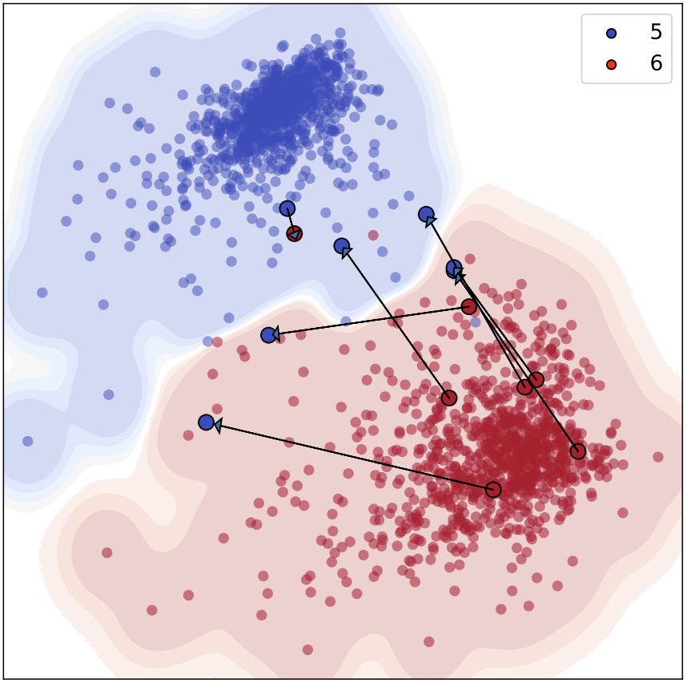
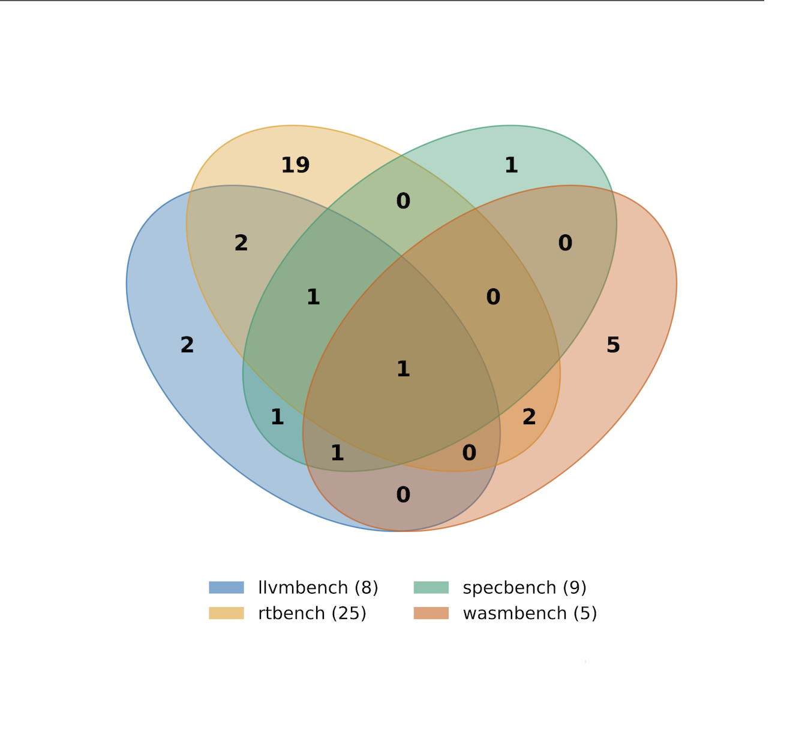

Giorgi Merabishvili
I'm a first-year PhD student at North Carolina State University (NC State) in Raleigh, working in the SWAT research group under Professor Marcelo d'Amorim. Prior to my doctoral studies, I earned my master's degree in Computer Engineering from New York University. During my master’s studies, I worked with Professor Andrea Stocco at the Technical University of Munich, supported by a DAAD research stipend.
{kind=link}
Research
I am broadly interested in software engineering, testing and improving robustness of software systems. Currently, working on WebAssembly runtime testing.
Publications
-

-

Education
-
 North Carolina State University — PhD, Computer Science
North Carolina State University — PhD, Computer Science -
 New York University — MS, Computer Engineering
New York University — MS, Computer Engineering -
 St. Francis College — BS, Information Technology
St. Francis College — BS, Information Technology
Work Experience
-
Research Assistant, North Carolina State UniversityWebAssembly runtime analysis; transplanting regression tests across runtimes and using them as seed corpora for fuzzing.
-
 Research Intern, Technical University of MunichAutomated testing for deep-learning systems; designed latent-space interpolation techniques to expose decision boundaries.
Research Intern, Technical University of MunichAutomated testing for deep-learning systems; designed latent-space interpolation techniques to expose decision boundaries. -
Computer Vision Engineer, RoboMaster NYUBuilt and deployed a real-time object-detection pipeline for competitive robotics.
-
Technology Specialist, Google Developer Student Clubs NYUOrganized ML/GenAI workshops and maintained technical documentation.
Awards & Honors
- DAAD Scholarship (Research Project) — Munich, Germany — 2024
- Merit Award, New York University — 2023–2025
- Honors Program Scholar & Summa Cum Laude, St. Francis College — 2023
- Travel Grant, Northeast Regional Honors Conference — 2023
- Inducted, Sigma Beta Delta International Honor Society — 2023
- Merit & Institutional Scholarships, St. Francis College — 2019-2023
Extracurricular Activities
- Member, NCSU Water Polo Club — 2025–Present
- Member, NYU Water Polo Club — 2023–2025
- NCAA Division I Water Polo, St. Francis College — 2019–2020
- Water Polo Youth National Team & Club Iveria, Georgia — 2015–2019
News
- Our paper Targeted Deep Learning System Boundary Testing has been accepted for publication at ACM Transactions on Software Engineering and Methodology!
- Accepted PhD offer at NC State starting Fall 2025!